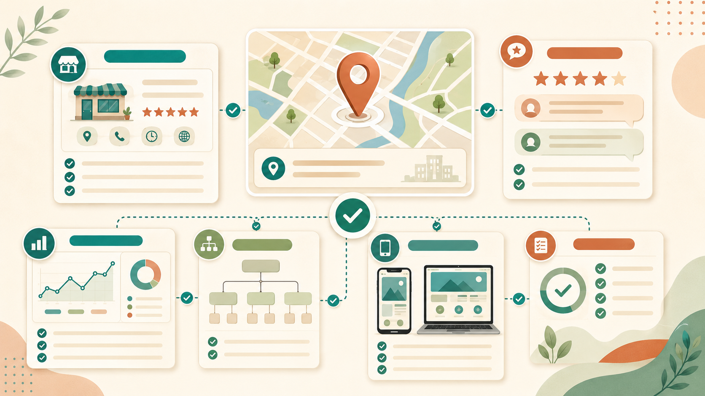

SEO địa phương cho cửa hàng nhỏ: giúp khách gần bạn tìm thấy bạn trên Google
Khách hàng bây giờ thường không đi tìm cửa hàng theo cách cũ. Trước khi ghé một quán cà phê, spa, tiệm tóc hay cửa hàng nhỏ, họ thường mở Google và gõ những câu rất đời thường như “quán cà phê gần đây”, “spa Gò Vấp”, “tiệm tóc Thủ Đức” hoặc “shop quần áo gần tôi”.
Nếu cửa hàng của bạn không xuất hiện ở những thời điểm đó, bạn có thể đang bỏ lỡ khách hàng ngay gần mình. SEO địa phương là cách giúp website, Google Maps và thông tin doanh nghiệp của bạn được Google hiểu rõ hơn, từ đó tăng cơ hội xuất hiện khi khách tìm dịch vụ trong khu vực.
Duyên Lành Web hỗ trợ SEO địa phương cho cửa hàng nhỏ theo hướng rõ ràng, bền vững và dễ hiểu. Chúng tôi không hứa “lên top trong vài ngày”. Thay vào đó, chúng tôi giúp bạn xây lại nền móng: website rõ ràng, thông tin thống nhất, Google Business Profile đầy đủ, nội dung đúng nhu cầu khách hàng và cấu trúc dễ để Google đọc.
SEO địa phương là gì?
SEO địa phương là quá trình tối ưu sự hiện diện online của một cửa hàng, doanh nghiệp hoặc dịch vụ theo khu vực cụ thể. Mục tiêu không phải là xuất hiện với mọi người trên cả nước, mà là xuất hiện với nhóm khách có khả năng ghé cửa hàng, gọi điện, nhắn Zalo hoặc đặt lịch trong khu vực bạn phục vụ.
Ví dụ, một spa ở Gò Vấp không nhất thiết phải cạnh tranh toàn quốc với từ khóa “spa đẹp”. Từ khóa thực tế hơn có thể là “spa Gò Vấp”, “chăm sóc da Gò Vấp”, “massage thư giãn gần đây” hoặc “spa gần Chung Cư An Lộc”. Những từ khóa này nhỏ hơn, nhưng sát khách hàng thật hơn.
Vì sao cửa hàng nhỏ nên làm SEO địa phương?
Với cửa hàng nhỏ, ngân sách quảng cáo thường không lớn. Bạn không thể lúc nào cũng chạy quảng cáo để có khách. SEO địa phương giúp xây một kênh tìm kiếm ổn định hơn, nơi khách có nhu cầu tự tìm thấy bạn trên Google.
- Tăng cơ hội xuất hiện khi khách tìm gần đây như “quán cà phê gần tôi”, “spa gần đây”, “tiệm tóc gần đây”.
- Tăng độ tin cậy nhờ website rõ ràng, địa chỉ thật, hình ảnh thật và đánh giá từ khách hàng.
- Giúp khách liên hệ nhanh hơn qua nút gọi, Zalo, Google Maps hoặc form đặt lịch.
- Giảm phụ thuộc vào fanpage vì website là tài sản riêng, không bị trôi bài như mạng xã hội.
- Phù hợp với ngành dịch vụ tại chỗ như quán cà phê, spa, barber shop, tiệm tóc, phòng khám nhỏ, lớp học, cửa hàng bán lẻ.
SEO địa phương bao gồm những việc gì?
Một chiến dịch SEO địa phương cơ bản không chỉ là thêm tên quận vào tiêu đề. Nó gồm nhiều việc nhỏ, mỗi việc như một viên gạch. Khi xếp đúng, Google dễ hiểu bạn là ai, ở đâu, làm gì và phù hợp với nhóm khách nào.
1. Tối ưu Google Business Profile
Google Business Profile là hồ sơ doanh nghiệp hiển thị trên Google Maps và kết quả tìm kiếm địa phương. Hồ sơ này nên có tên doanh nghiệp, địa chỉ, số điện thoại, giờ mở cửa, danh mục ngành nghề, mô tả, ảnh thật, website và khu vực phục vụ.
Với cửa hàng nhỏ, đây là phần rất quan trọng. Một hồ sơ trống, thiếu ảnh, sai giờ mở cửa hoặc không có website sẽ khó tạo niềm tin. Ngược lại, hồ sơ đầy đủ giúp khách dễ gọi, xem đường đi và kiểm tra đánh giá trước khi ghé.
2. Tối ưu website theo khu vực
Website nên có các trang hoặc bài viết nhắm đúng nhu cầu địa phương. Ví dụ: “thiết kế website tại TPHCM”, “thiết kế website cho spa”, “SEO địa phương cho cửa hàng nhỏ”, hoặc các bài tư vấn theo ngành.
Điều quan trọng là viết tự nhiên. Không nên nhồi địa danh kiểu lặp liên tục “Gò Vấp, TPHCM, Quận 1, Quận 7” trong mọi câu. Google ngày càng hiểu ngữ cảnh tốt hơn, còn người đọc thì cần thông tin rõ ràng, không phải một nồi lẩu địa danh.
3. Thống nhất thông tin NAP
NAP là viết tắt của Name, Address, Phone, nghĩa là tên doanh nghiệp, địa chỉ và số điện thoại. Thông tin này nên thống nhất trên website, Google Business Profile, fanpage, Zalo, các danh bạ doanh nghiệp và các trang mạng xã hội khác.
Nếu nơi này ghi một số điện thoại, nơi khác ghi số khác; nơi này ghi “TPHCM”, nơi khác ghi địa chỉ thiếu quận; Google và khách hàng đều dễ bị nhiễu. Càng thống nhất, độ tin cậy càng tốt.
4. Tối ưu nội dung theo câu hỏi thật của khách
Khách hàng không chỉ tìm tên dịch vụ. Họ còn hỏi giá, quy trình, thời gian, khu vực phục vụ, có bảo hành không, có đặt lịch không, có hỗ trợ sau khi làm không. Vì vậy, nội dung SEO địa phương nên trả lời những câu hỏi thật này.
Ví dụ với một spa, bài viết có thể trả lời: “Spa nhỏ có cần website không?”, “Website spa cần những phần nào?”, “Làm sao để khách tìm thấy spa trên Google Maps?”. Với quán cà phê, nội dung có thể xoay quanh menu, không gian, bản đồ, đặt bàn, hình ảnh và khu vực.
5. Tăng đánh giá thật từ khách hàng
Review là tín hiệu quan trọng về niềm tin. Một cửa hàng có đánh giá thật, phản hồi lịch sự và hình ảnh thực tế sẽ dễ thuyết phục khách hơn. Tuy nhiên, không nên mua review ảo. Cách tốt hơn là nhờ khách hài lòng để lại đánh giá ngắn, đúng trải nghiệm.
Checklist SEO địa phương cho cửa hàng nhỏ
Nếu bạn chưa biết bắt đầu từ đâu, có thể kiểm tra theo danh sách sau:
| Hạng mục | Việc cần làm | Mục tiêu |
|---|---|---|
| Google Business Profile | Điền đủ tên, ngành nghề, địa chỉ, giờ mở cửa, số điện thoại, website, hình ảnh. | Hiển thị tốt hơn trên Google Maps. |
| Website | Có title, meta description, H1, nội dung rõ, nút gọi/Zalo, bản đồ và trang liên hệ. | Google hiểu dịch vụ và khách dễ liên hệ. |
| Từ khóa địa phương | Dùng tự nhiên các cụm như ngành nghề + khu vực: spa Gò Vấp, tiệm tóc Thủ Đức. | Tiếp cận đúng khách ở gần. |
| Review | Nhờ khách thật đánh giá, phản hồi đánh giá lịch sự, cập nhật ảnh định kỳ. | Tăng độ tin cậy. |
| Search Console | Xác minh website, gửi sitemap, theo dõi lượt hiển thị và từ khóa. | Biết Google đang đọc website ra sao. |

SEO địa phương khác gì SEO thông thường?
SEO thông thường có thể nhắm tới lượng tìm kiếm rộng hơn, không nhất thiết gắn với một địa điểm cụ thể. SEO địa phương tập trung vào khách hàng trong một khu vực nhất định. Vì vậy, yếu tố địa chỉ, bản đồ, số điện thoại, giờ mở cửa, đánh giá và khoảng cách đến người tìm kiếm trở nên quan trọng hơn.
Với doanh nghiệp nhỏ, đây là hướng thực tế hơn. Bạn không cần cạnh tranh với toàn bộ thị trường. Bạn chỉ cần xuất hiện đúng lúc khách ở gần đang cần sản phẩm hoặc dịch vụ của bạn.
Không cam kết top Google, nhưng làm đúng nền tảng
Duyên Lành Web không cam kết “top 1 Google trong 7 ngày”. SEO không phải nút bấm thần tốc. Một kết quả bền vững cần thời gian, nội dung thật và nền tảng kỹ thuật đúng.
Điều chúng tôi làm là giúp website của bạn có cấu trúc rõ ràng, chuẩn mobile, tốc độ tốt, nội dung dễ hiểu, sitemap đúng, Search Console được cài đặt và các trang dịch vụ có tiêu đề, mô tả, liên kết nội bộ phù hợp. Đây là phần nền. Nền tốt thì ngôi nhà mới đứng lâu.
Dịch vụ SEO địa phương của Duyên Lành Web phù hợp với ai?
Dịch vụ này phù hợp với các cửa hàng và dịch vụ nhỏ muốn có mặt rõ ràng hơn trên Google:
- Quán cà phê, quán ăn nhỏ, tiệm bánh.
- Spa, thẩm mỹ viện, salon làm đẹp.
- Tiệm tóc, barber shop, nail, makeup.
- Shop thời trang, cửa hàng quà tặng, cửa hàng mẹ và bé.
- Dịch vụ sửa chữa, lớp học nhỏ, tư vấn địa phương.
- Doanh nghiệp nhỏ tại TPHCM muốn có website và Google Business Profile chỉn chu hơn.
Quy trình SEO địa phương cơ bản
Mỗi cửa hàng có tình trạng khác nhau, nhưng quy trình cơ bản thường gồm:
- Kiểm tra hiện trạng: website, Google Business Profile, fanpage, thông tin liên hệ, tốc độ và hiển thị mobile.
- Xác định khu vực và dịch vụ chính: ví dụ Gò Vấp, Tân Bình, Thủ Đức; dịch vụ chính là spa, tiệm tóc, quán cà phê hoặc shop.
- Tối ưu website: title, meta description, H1, nội dung, hình ảnh, alt ảnh, liên kết nội bộ, CTA.
- Tối ưu Google Business Profile: danh mục, mô tả, ảnh, giờ mở cửa, website, số điện thoại, bài đăng nếu phù hợp.
- Cài công cụ theo dõi: Google Search Console, sitemap và kiểm tra index.
- Đề xuất nội dung tiếp theo: bài viết theo ngành, bài theo khu vực, câu hỏi thường gặp, trang dịch vụ.
Chi phí SEO địa phương
Với Duyên Lành Web, SEO địa phương cơ bản thường đi cùng các gói SEO website cơ bản hoặc gói thiết kế website cho cửa hàng nhỏ. Mục tiêu là giúp khách hàng nhỏ có nền tảng đúng ngay từ đầu, không phải làm website xong rồi mới vá SEO như vá áo mưa giữa cơn mưa.
Anh/chị có thể xem thêm bảng giá dịch vụ hoặc liên hệ để được tư vấn hướng làm phù hợp với ngành nghề, khu vực và ngân sách hiện tại.
Câu hỏi thường gặp về SEO địa phương
SEO địa phương là gì?
SEO địa phương là cách tối ưu website, Google Business Profile và thông tin doanh nghiệp để khách hàng ở gần khu vực của bạn dễ tìm thấy bạn trên Google Search và Google Maps.
Cửa hàng nhỏ có cần SEO địa phương không?
Có. Nếu khách hàng của bạn thường đến từ khu vực gần cửa hàng, SEO địa phương rất đáng làm. Nó đặc biệt phù hợp với quán cà phê, spa, shop, tiệm tóc và các dịch vụ địa phương.
SEO địa phương có cam kết lên top Google không?
Không nên cam kết lên top trong thời gian ngắn. Duyên Lành Web tập trung làm đúng nền tảng: website rõ ràng, thông tin thống nhất, Google Business Profile đầy đủ, nội dung hữu ích và review thật.
Google Business Profile có quan trọng không?
Rất quan trọng. Đây là nơi khách xem địa chỉ, số điện thoại, giờ mở cửa, chỉ đường, hình ảnh và đánh giá trước khi quyết định ghé cửa hàng.
Bao lâu thì SEO địa phương có hiệu quả?
Tùy ngành và khu vực. Một số cải thiện kỹ thuật có thể được Google ghi nhận sau vài tuần, nhưng để có kết quả ổn định cần duy trì nội dung, hình ảnh, review và thông tin chính xác theo thời gian.
Bạn muốn khách gần mình tìm thấy cửa hàng dễ hơn?
Duyên Lành Web có thể giúp bạn kiểm tra website, tối ưu Google Business Profile, cài Search Console và xây nền tảng SEO địa phương rõ ràng cho cửa hàng nhỏ.